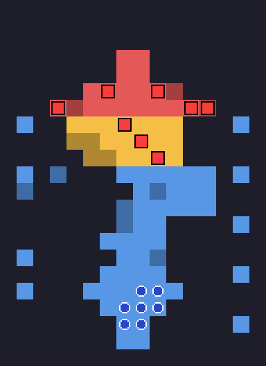
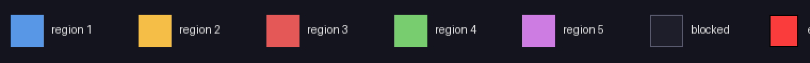
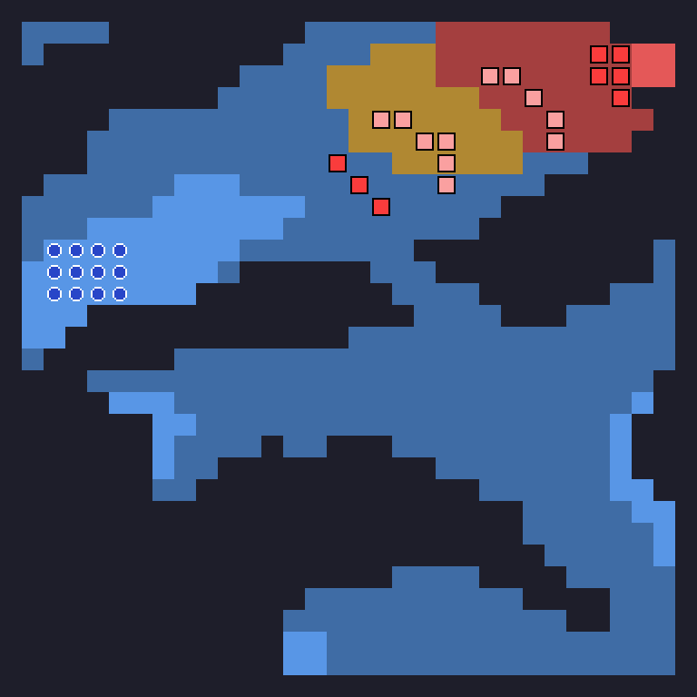
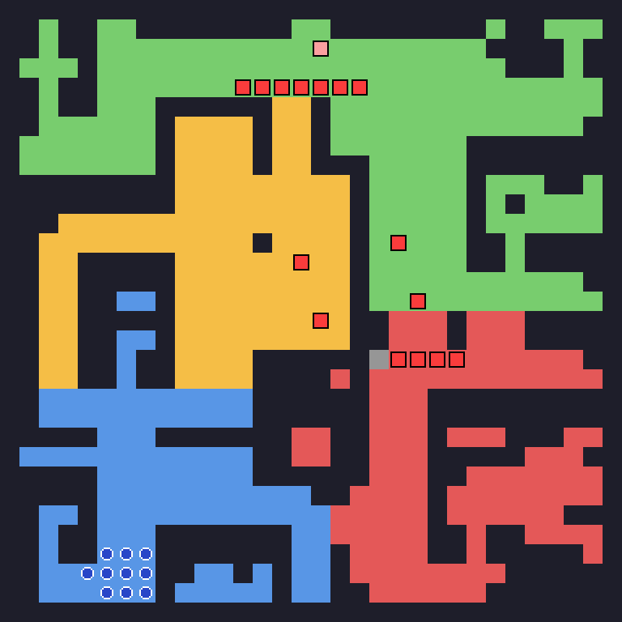
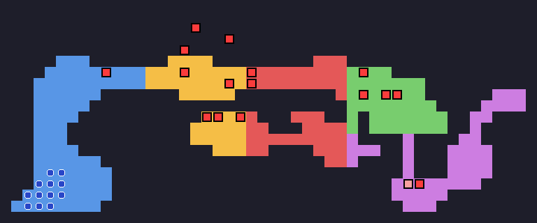
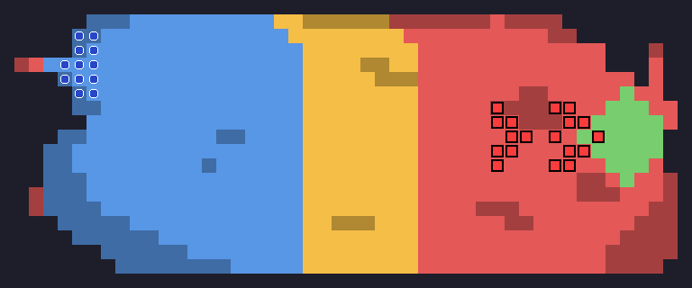
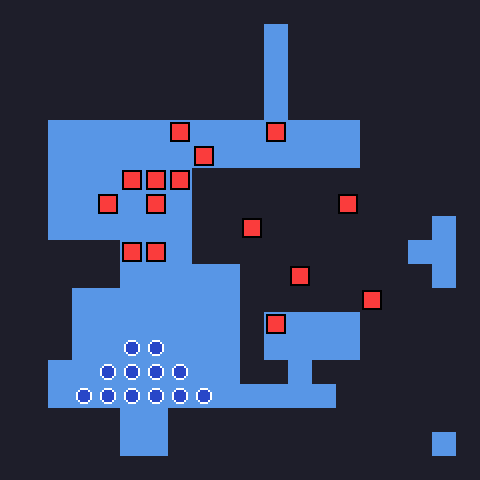
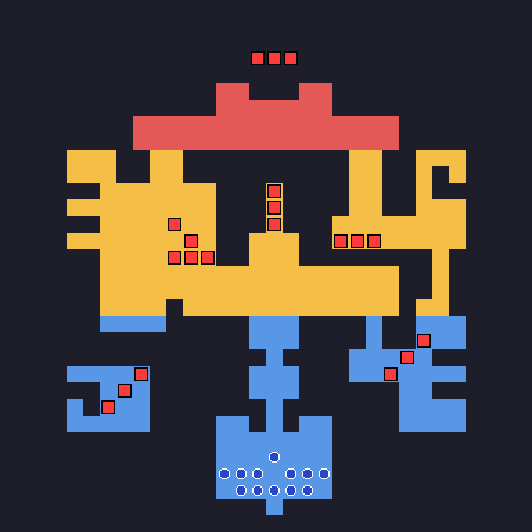
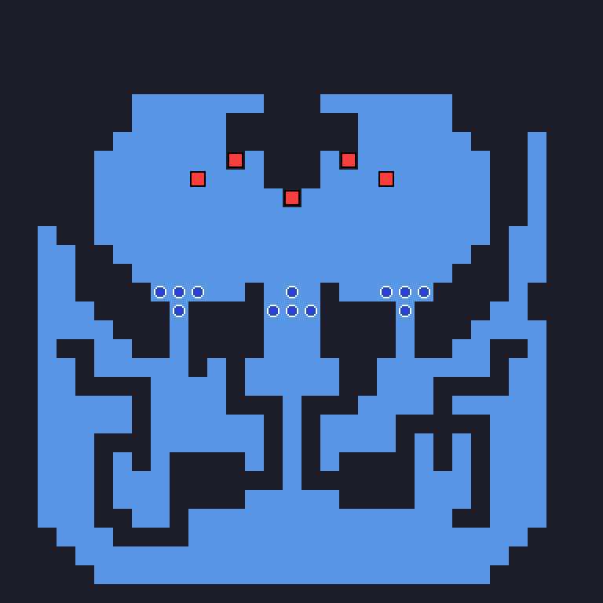
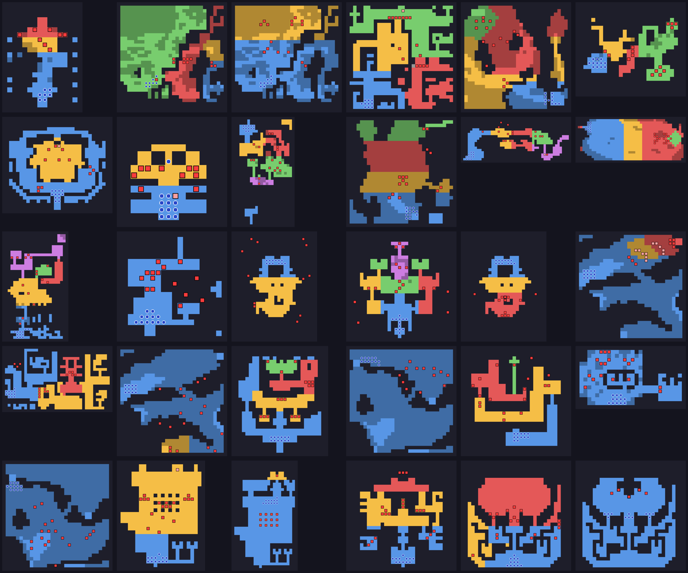

Home › Shining Force › Enemy AI
Shining Force — How the Enemy Decides
Regions, orders and the targeting score, read out of the ROM


The short version
The enemies in Shining Force do not think. Each one carries a list of two or three orders, and each order names the regions of the map that switch it on. The regions are painted onto every battlefield tile by tile, invisible to you. Stand in the wrong ones and the enemy holds a position or does nothing; stand in the right one and it charges. There are only three verbs in the whole game: go to a tile, charge, follow a path.
When it does charge, it scores everyone it can reach and hits the highest. The score is class first, distance second, health third, and because of a bug it uses the same class table for every enemy, one in which a promoted mage is worth nothing. Every number below comes from the US ROM, and the maps of all thirty battles are at the bottom.
A map under the map
Each battle map in the ROM comes with two grids. One is the terrain, which decides where you can walk and how much it costs. The other has the same shape and assigns every tile a number from 0 to 15. Both are run-length coded, four bits for the value and four for how many times it repeats, and both are unpacked into work RAM when the battle starts. The second grid is the one this article is about. I will call its values regions, since that is what the disassembly calls them, and the game only ever uses 1 to 5.
Before every enemy action the game recomputes one byte. It walks the list of combatants, and for each member of your Force it looks up the region under their feet and sets that bit. Enemies are skipped. The byte is not remembered from one action to the next; it is rebuilt each time from where your people are standing right now. So a region is "on" while at least one of yours is in it, and off the moment the last one leaves. There is no memory, no alarm that stays raised, with one exception in one battle that gets its own section below.
Blocked tiles are forced to region 0 when the grid is unpacked, which is why the black tiles in the pictures carry no colour. A flier hovering over water is, for the purposes of the AI, in no region at all.
Three verbs
After the enemy list and the starting positions, each battle stores one list of orders per enemy. An order is four bytes: a bitmask of regions, a verb, and two parameters. The verbs are:
- Move to: walk toward a given tile. If somebody is in weapon or spell range after the move, attack them.
- Charge: pick a target and go for it.
- Follow path: walk along a list of waypoints stored beside the orders, one leg per turn.
The game reads the enemy's list from the top and takes the first order whose mask overlaps the current region byte. Order matters: a list that says "charge on 3, move on 1 or 2" will charge if anyone is in 3 even if the rest of your army is back in 1. If no order matches, the enemy does nothing. Not "holds position and attacks whoever comes close"; nothing. The routine that handles the no-match case writes the idle action code and returns without ever looking for a target. Across the thirty battles that never actually happens, because every list has an order that covers the regions where you can be, but the code path is there.
Here is the complete list for Battle 1. Eight enemies, sixteen orders.
RUNE KNIGHT (8,8) regions 3 CHARGE
regions 1,2 MOVE TO 8,4
DARK DWARF (9,5) regions 2,3 CHARGE
regions 1 MOVE TO 7,5
DARK DWARF (6,5) regions 2,3 CHARGE
regions 1 MOVE TO 8,5
GOBLIN (3,6) regions 2,3 CHARGE
regions 1 MOVE TO 7,6
GOBLIN (12,6) regions 2,3 CHARGE
regions 1 MOVE TO 8,6
GOBLIN (9,9) regions 2,3 CHARGE
regions 1 MOVE TO 9,10
GOBLIN (7,7) regions 2,3 CHARGE
regions 1 MOVE TO 8,10
GOBLIN (11,6) regions 2,3 CHARGE
regions 1 MOVE TO 10,9
Look at the picture again. While you are in blue, region 1, every goblin walks to a tile in the square and the Rune Knight walks to the gate. That is the line you see forming as you approach. The moment one of yours steps onto orange, the goblins and dwarves charge. The knight waits for red. Nothing about it is a reaction to you as a threat; it is a reaction to a tile.
Counting all thirty battles: 373 charge orders, 355 move-to orders, 29 follow-path orders, and 166 enemies whose only order is a charge with the mask set to every region, which is the closest thing the game has to "just attack".
What charge actually means
A charging enemy does not see the whole map. It builds the set of tiles it could reach with twice its movement, then lists the members of your Force standing on those tiles. If the list is empty, it stays where it is and the turn ends. So an enemy three turns away is not coming for you yet, however much the order says charge; it will come when you are inside two moves of it.
If the list is not empty, it scores each entry, sorts, and walks toward the winner, trying to end its move within attack range. One more rule from the code: while charging, the enemy will not end its move on a tile belonging to the regions named in the order that triggered it. For the goblins above, that means once you are in orange they will not stop in orange or red; they come down into blue, to you. I read that as a way of making the defenders leave their post. It could also be an accident that happens to work.
Whom they hit
The score has three terms and they are all in one small routine.
- Class
- twice a fixed value per class: Max 100, Mage and Domingo 75, Healer, Archer, Birdman and their promoted forms 25, every melee class 0
- Distance
- 400 for an adjacent target, 40 fewer for each tile beyond that, and nothing at eleven tiles or more
- Health
- the target's current HP as a percentage of its maximum, one point per percent
Class is worth up to 200, distance up to 400, health up to 100, and the highest total gets hit. A few consequences fall out of the arithmetic. Max is always the most wanted man on the field: two tiles away at full health he scores 660, which beats any knight standing adjacent at full health, who scores 500. Tao at full health three tiles from an enemy, 570, still loses to Max but beats every fighter in the party. And a wounded character is slightly less attractive than a healthy one, which is the opposite of what most players assume; the health term rewards full bars. It is a tiebreaker more than a policy, since a hundred points is worth two and a half tiles of distance, but it is there.
Then there is the bug. The ROM holds five class tables, one per movement type of the attacker, and the disassembly labels them Null, Standard and so on. The routine that reads them loads the address of the first table and never adds the offset for the enemy's movement type. So every enemy in the game, flier or walker, uses the table meant for enemies with no movement type at all. In that table the promoted Mage, the Wizard, is worth 0, while the unpromoted Mage is worth 75. Promote Tao and the enemies lose interest in her. The Standard table, the one most enemies were presumably meant to use, has Mage at 0 and Healer at 75, which would have made your priests the targets instead. Nobody ever saw that table in play.
Spells use their own scoring. Heal, Aura, Detox and Egress pick the ally with the lowest health percentage; Quick, Slow, Boost, Dispel, Shield and Muddle pick a target that does not already carry the effect; Blaze, Freeze, Bolt, Desoul and Sleep use the same class-distance-health score as a weapon.
When they use a spell instead
Whether an enemy casts, breathes fire or just swings is decided before it moves, by a roll against a percentage stored in its class. Most classes are set to always attack. Dark Mages, Dark Priests and High Priests cast 75 percent of the time; Cerberus, Hellhounds, Gargoyles, Belials, Ice Worms and Armed Skeletons use their breath, spell or machine gun half the time; the Dark Elf throws an item from its second slot half the time. The roll happens first, then the movement, then a search for a target in range of whatever was rolled. If a caster rolls a spell and finds nobody in range after moving, it falls back to a weapon check, and if that finds nobody either, it stands there. That is the mage who walks up to you and does nothing: it rolled Blaze, walked, and its Blaze could not reach.
Reinforcements, and the one battle that remembers
Each enemy position entry carries two more bytes: an event flag number and a life count. The flag has to be set for the enemy to be placed at all, and each time the enemy dies the game checks whether it has lives left, whether the flag is set and whether its home tile is free, and if so puts it back. The flags in question are the eight bits of one byte inside the saved-game area, so they survive Egress.
Only a handful of entries use any of this. Kane and one of his Rune Knights at Alterone, Mishaela at the circus, the Goblin at the Laser Eye and Ramladu at his gate are all tied to flags 478 and 479, which the chapter-title code sets when those chapters begin. In the shipped game they are always on by the time you fight; whatever they were for, it did not survive to release.
The region flags, 464 to 471, are different, and here is the exception promised earlier. A routine exists that ORs the current region byte into that saved byte, which would make regions sticky, but the disassembly shows nobody calling it, and a scan of the ROM for every way of calling it finds nothing either. It is reached through a pointer instead: each battle header has a slot for a per-battle hook that runs every round, and exactly one battle fills it. Battle 18, the road to Dragonia, installs that routine, and it is the only place in the game where entering a region leaves a mark. Five Golems appear when region 3 has ever been entered, three Master Mages and three Worms when region 2 has. Every guide lists them as part of the battle; they are, but only because you walk into them.

The only enemies with more than one life are in the last battle: the two Armed Skeletons flanking Dark Dragon have fifteen lives each. Kill one and it is back the next round, as long as its tile is empty. The dragon's three heads never move more than the two tiles their orders allow.
Six battles, read from the orders

Alterone. Kane's list is one line long: charge, every region. The four Giant Bats fly a loop of four waypoints while you are in region 1, the entrance, and switch to charge as soon as you reach 2. The Rune Knights at the top form a line at y=9 while you are in 1 or 2, shift to y=5 when you are in 3, and charge when you reach 4; two of the four also charge on 2. The Dark Dwarves in the middle hold, charge only when you enter their own region, and otherwise shuffle between two posts. Nothing here is improvised; the fight you remember as an ambush is a script with four scenes.

The Laser Eye. Its single order is "move to 32,6", which is where it stands. It never moves; it only fires, because its class action is the laser and the roll for it comes up every turn. The three Dark Elves near the middle relocate to the ridge at x=27 to 30 when you reach region 3, which is the moment the map narrows, and charge from 4. The two Lizardmen by the bridge have a move-to order for their own tiles under every region, which makes them the purest sentries in the game: they never leave, they hit whoever comes adjacent.

Elliott. The general holds his tile until you enter region 4 and then charges. His Silver Knights charge from 3, the Pegasus Knights and Lizardmen from 2, and until then they walk to posts around x=25 to 28 and wait. Two of the three Dark Priests have the strangest order in the game: once you are in 2, 3 or 4 they move to x=0, the western edge of the map, and keep going. They are running away.

Balbazak. The harbour map has one region, so the orders are simply what each enemy always does. Balbazak holds his tile; the Evil Puppet and one Hellhound walk to his side and stay there. Everything else charges from turn one. If you have ever wondered why Balbazak sits at the back while his army throws itself at you, that is the whole reason.

Colossus. The three parts have three lists. The centre holds its tile until region 3. The two side parts are the only bosses with a follow-path order: while you are in region 1 they walk down the flanks, one to (8,10) and one to (22,10), two waypoints each, and charge from region 2. The three Jets in the middle hold in region 1 and charge from 2; the Chimaeras and Blue Dragons charge from the start.

Dark Dragon. Five entries. The three heads each have one order, to move two tiles south of where they start and stay there. The two Armed Skeletons charge, and each has fifteen lives.
All thirty

Some patterns show up across the sheet. Boss maps tend to have the boss's own region wrapped in one or two outer rings, so that the boss is the last thing to move. The circus, Shade Abbey and the first ship battle use two regions, near and far. Twelve battles use four or five, and those are the ones with staged defences: Alterone, the Cavern of Darkness, the Laser Eye, the Pao prairie, the Demon Castle. The full order lists for every enemy in every battle are in the JSON file below, in case you want to plan a fight tile by tile.
What to do with this
Approach one region at a time. The map does not know how strong you are; it knows where your feet are. If a group is holding a line, the line breaks when one of yours crosses into their trigger region, and it breaks all at once. Send the character you want to be charged, and nobody else.
Keep Max two tiles further back than you think. At 200 points before distance is counted, he is the target of anything that can reach him, and reach means within two moves of the enemy, not one.
Bait with a mage, screen with a wizard. Tao unpromoted draws fire like Max does; Tao promoted is invisible to the score. A fighter at full health in front of her will be hit first only if the enemy is adjacent to him and three or more tiles from her.
Enemies with a move-to order and no charge in their list never come to you. Two Lizardmen at the Laser Eye, the Laser Eye itself, Balbazak, and the three heads of Dark Dragon can be left alone until you are ready.
How this was done
The subject is Shining Force (USA), 1 572 864 bytes, MD5
4b4acbe75ff7aaeb534ab78ed95910d1. Every address is an offset into that
file. The battle headers start at $02704E as a table of relative offsets
by chapter, then by map, then by map version; each version block points to the region
grid, the enemy list, the positions, the orders and, in one case, the per-battle hook.
The terrain and region grids live between $0279AC and $029EA4,
the enemy lists, positions and orders between $029EA4 and
$02BF85, the five class tables at $0243AA, and the per-class
action chances inside the class definitions at $0260BC.
The region byte is rebuilt by the routine at $02425C and consumed by the
order lookup at $024292. The three verbs dispatch from $023CB6.
The score is computed by priority_ClassDistanceHealth at
$024378 and its helpers at $024386, $0244CA and
$0244F0, and sorted by the routine at $0245A2; the read that
never adds the table offset is at $024396, where the
disassembly itself carries the comment "does not offset to proper table for
movetype". The per-turn action roll is DetermineAiAction at $023F6E,
against the percentages at $024002; the spell chooser follows at
$02401C. The sticky-region routine is at $027036, and
the hook slot that reaches it is the third word of a version block.
I decoded the grids and orders with a Python script written against the SF1DISASM disassembly, checked the first battle's regions against what happens on screen, and checked the Dragonia reinforcements against the published battle guides, which list the Golems, Mages and Worms as present. What I have not done is watch the score in RAM during a live fight; the formula is read from the instructions, not measured. If you set up a RAM watch and find an enemy hitting someone the formula says it should not, I want to know.
Questions people actually ask
Why do some enemies stay put until you get close?
Because their orders are keyed to regions of the map you cannot see, and the order that makes them charge only applies while one of your characters stands in one of those regions. Until then they hold a position, or in principle do nothing at all.
How does an enemy choose whom to attack?
It scores everyone within twice its move: twice a class value, plus 400 for an adjacent target minus 40 per extra tile, plus the target's HP percentage. Highest wins. Max is worth 100, mages 75, support classes 25, fighters 0.
Do enemies get reinforcements?
Only on the road to Dragonia, where Golems, Master Mages and Worms appear once you have entered the regions in front of them, and in the Dark Dragon battle, where two Armed Skeletons have fifteen lives each.
Does promoting a character change how enemies target it?
Yes. The targeting code always uses the class table meant for enemies with no movement type, in which the promoted Mage is worth 0. Promote Tao and the enemies stop singling her out.
Credits
The data formats, the routine labels and the comment that pointed me at the table bug are from SF1DISASM, the Shining Force Central disassembly. The battle numbering follows the walkthroughs on GameFAQs and RPGClassics.